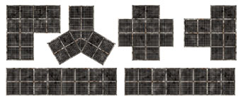

Working Stiff Productions proudly presents
Graphic
Artist Ron Shirtz's
Sci-Fi Series RPG tiles
The following tiles are available on CD for $10

Tech Floors
Four 8.5" x 11" mapsheets of tech floor tiles.10 straight sections, 6 corners, 2 "T" sections, 2 intersections, and 1 "Y" sections---21 tiles in all!
Perfect for Star Wars RPG, Space Hulk, Space Crusade, and other Sci-Fi games.

The Space Freighter "Brandy's Lament"
Two 11"x 17" mapsheets make up this full color and beautifully detailedgame tile of a futuristic space freighter----almost three feet long
Comes with an two-page technical sheet with stats and scenario ideas.
Check out these pictures of Brandy's Lament in action
at a Wellington Warlords game convention in New Zealand
Email Ron Shirtz at egc@northnet.org